Rokkasho
Rokkasho · Aomori
Rokkasho
Highlighted on the Aomori map.
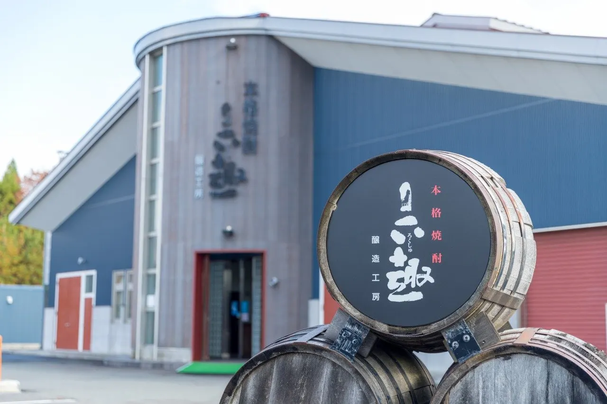
Stay
たびのホテル青森六ヶ所村
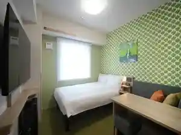
Tabino Hoteru Aomori Roku Ke Tokoro Mura
Dining
木村屋
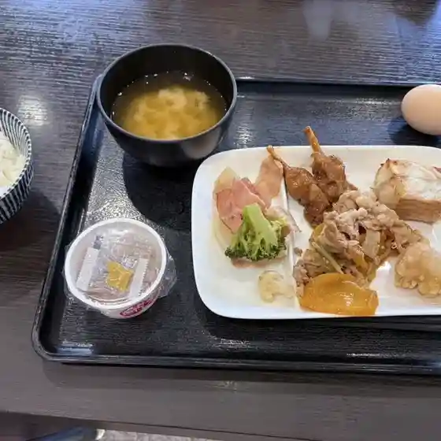
Kimura Ya
なかま
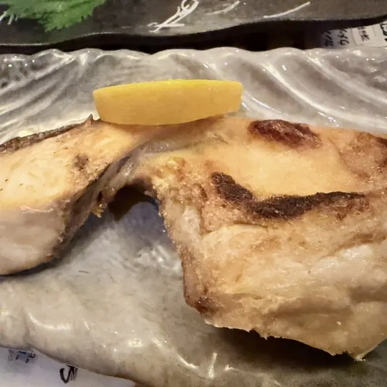
Nakama
食事処酒処松本屋
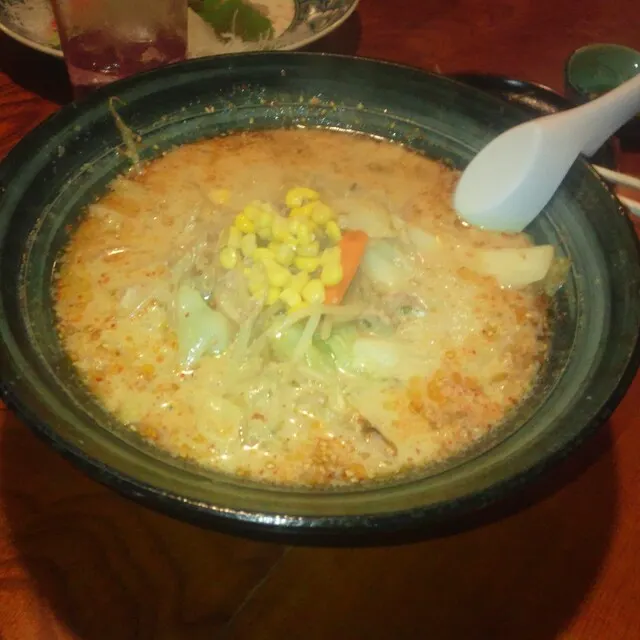
Shokuji Tokoro Sake Tokoro Matsumoto Ya
あぶにーる
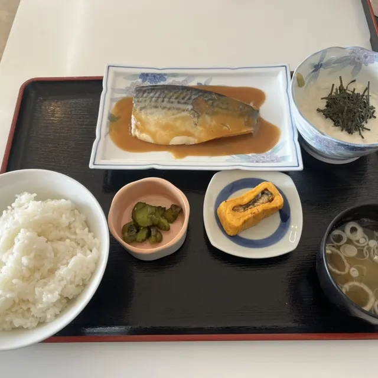
Abuniiru
喫茶 まーぶる
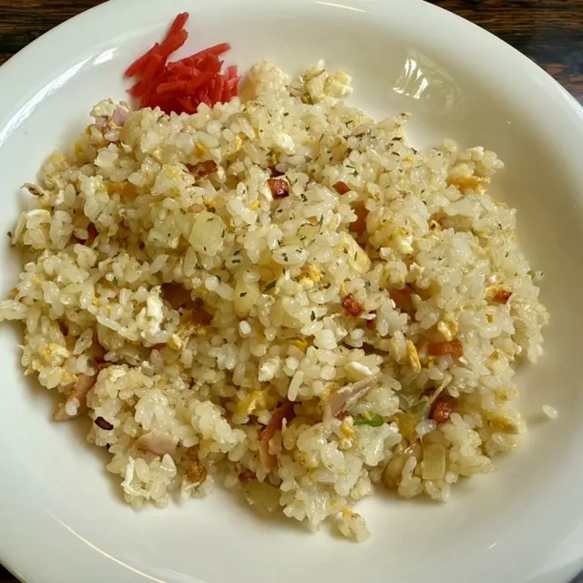
Kissa Maaburu
レストラン シーズン
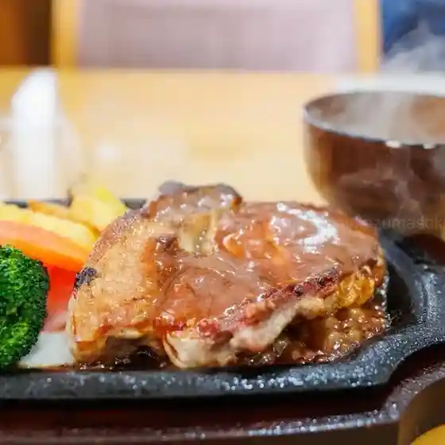
Resutoran Shiizun
六趣醸造工房
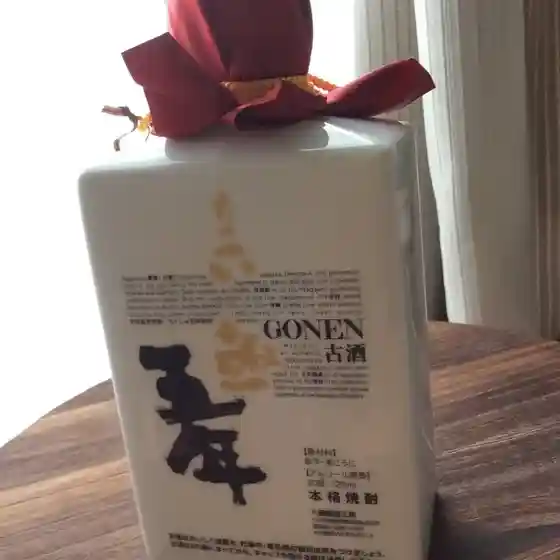
Roku Omomuki Jouzou Koubou
軽食＆喫茶 真木葉
Keishoku & Kissa Maki Ha
パラム
Paramu
あかべこ
Akabeko
ファミリーマート 六ヶ所店
Famiriimaato Roku Ke Tokoro Mise
文化食堂
Bunka Shokudou
神楽 六ヶ所村店
Kagura Roku Ke Tokoro Mura Mise
フォレスト
Foresuto
コマイ食堂
Komai Shokudou
農事組合法人岡山牧場
Nouji Kumiai Houjin Okayama Bokujou
武寿司
Taketoshi Tsukasa
六旬館
Roku Jun Kan
はいから食堂
Haikara Shokudou
ビジネスホテル リッチ
Bijinesuhoteru Ritchi
さつき食堂 リーブ店
Satsuki Shokudou Riibu Mise
ホテル市原クラブ 六ヶ所店
Hoteru Ichihara Kurabu Roku Ke Tokoro Mise
スパハウス ろっかぽっか
Supahausu Rokkapokka
旬食
Jun Shoku
Sights
Rokushu Brewery
Brewery making authentic shochu from Rokkasho-grown nagaimo yams.
Yajiro Ana
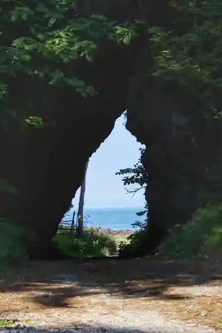
Natural tunnel near the base of the Shimokita Peninsula, often likened to a Ghibli scene.
Spa House Rokka Pokka
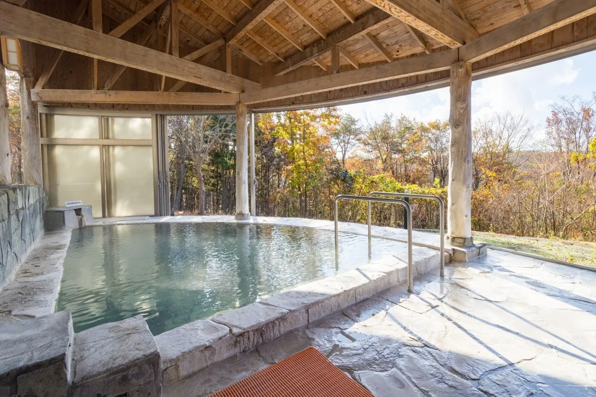
Spa House Rokka Pokka is a hot spring facility located in Rokkasho Village.
Rokkasho Visitors Center
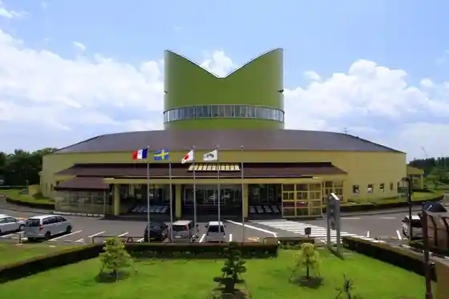
Introduces nuclear fuel cycle facilities - including the uranium enrichment plant, low-level radioactive waste disposal center, and reprocessing plant - using large-scale mockups and video panels.
Mate Fishing Huts
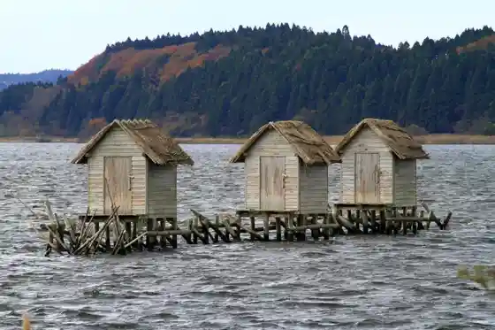
Fishermen's huts standing in the water near the mouth of the Takase River at Lake Ogawara.
Rokkasho Village Folk Museum
Museum of excavated finds from the Jomon period onward.
Obuchi-numa / Osame-numa Lakes
Lagoon lakes left by the Jomon-era sea advance; Jomon sites found nearby are designated Important Cultural Properties.
Takahoko-numa Lake
Largest of Rokkasho's brackish lagoon lakes on the Pacific coast of the Shimokita Peninsula.
Osame Lakeside Park
Lakeside park on Obuchi-numa where many swans spend the winter.
Takinoshiri Falls
6-7 m waterfall in Tomari close to the coast, where falling water meets the sound of the waves.